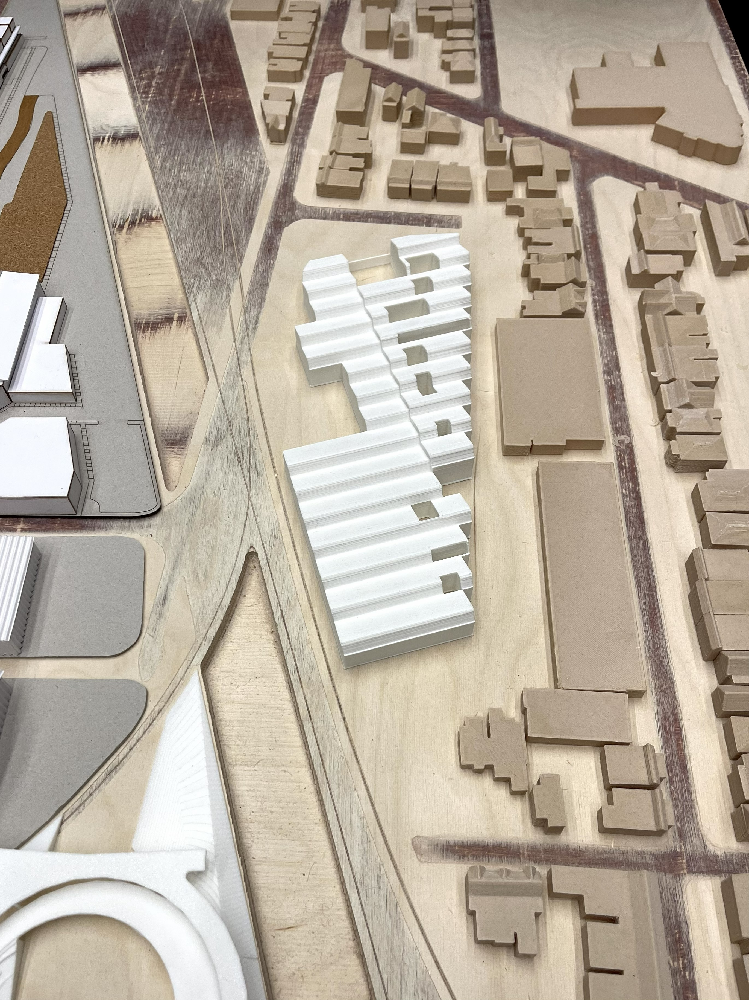

wareHaus
title
wareHaus
course
ARC3015 Option Studio
supervisor
Christine Ho Ping Kong, Peter Tan
category
spaces
+ Project Description
Site / Context
A former industrial hub, the Junction neighbourhood in Toronto has evolved into an idiosyncratic blend of zoning typologies -
residential, commercial and most interestingly, light manufacturing. It is the home to a range of small manufacturing businesses, including the city’s only cheese factory, multiple coffee roasteries and various wood and metal shops.
Challenging Toronto’s segregated zoning bylaws, wareHaus proposes a live/work model that combines light manufacturing and residential uses in a single lot. The project explores how the frictions between living and making can be mitigated while generating productive adjacencies that foster new creative models for living.
Productive Adjacencies
wareHaus combines three programs–material salvage, furniture making and community initiative– to generate a new craft centre at the junction of the neighbourhood’s railways. While each program is self-contained with distinct operations, they are mutually supportive. Designers from live/make units may teach in the shared community workshop and source materials directly from the reclaim warehouse. This warehouse operates through continuous inventory and exchange; its proximity to a design community repositions maintenance as a creative practice. Shared community workshops generate a wider culture of personal fabrication within the neighbourhood and the greater city of Toronto.
Live/Make Lofts
The division of live and make is blurred within each dwelling unit. These are double height lofts, where the addition of a mezzanine or second floor can accommodate a variety of live/make layouts. Each unit has a front and back face that opens onto an outdoor space, allowing for separated entrances for the live and make portions of the loft.





.jpg)